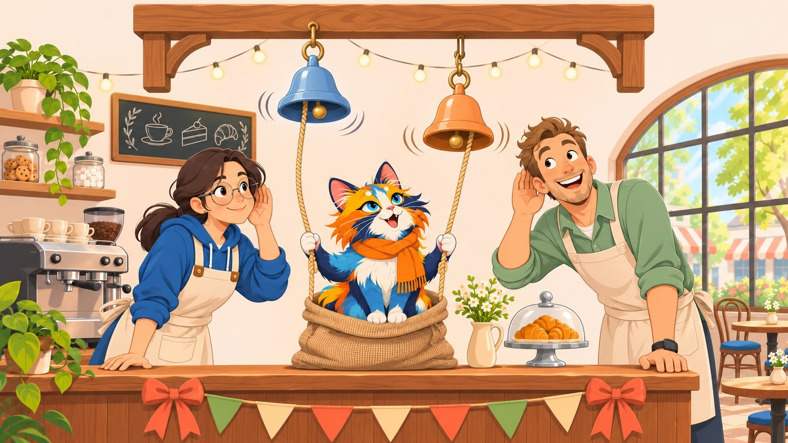
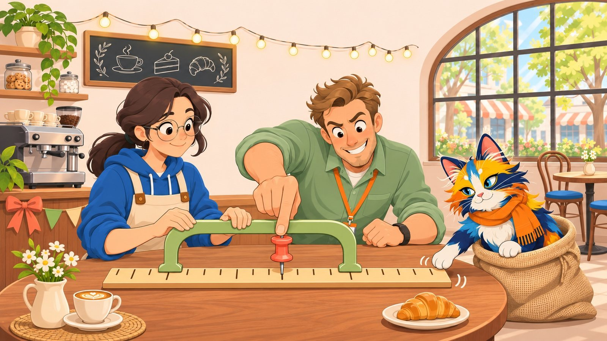
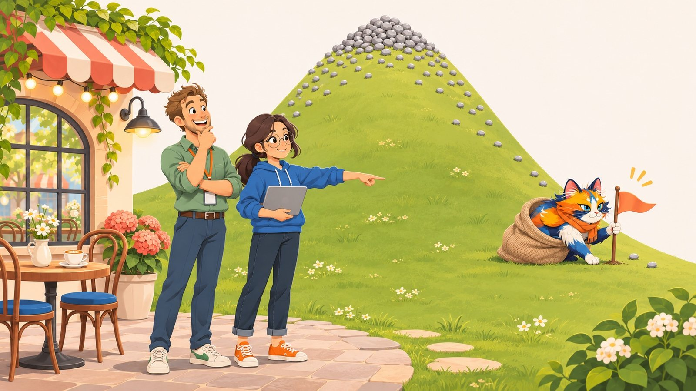

Шаг 6 из 10
Эффект — это вилка

Мы знаем, что любое среднее шатается и живёт на колоколе. В эксперименте средних два: у контроля и у теста. Значит, и колоколов два.
Пусть команда проверяет фото блюд в меню. В контроле заказ делают 10 % зашедших в приложение. Фото на самом деле поднимают эту долю на 3 %, до 10,3 %. В каждой группе по 100 000 человек. Запусти эксперимент и посмотри, что он покажет.
У каждой группы свой колокол: среднее шатается вокруг правды
Нажми несколько раз: каждый запуск даёт свою разницу.
Боб записывает в отчёт одно число


Эксперимент показал +2,3 %. Так и пишу: фото дают +2,3 % к заказам.
Ты только что видел: тот же эксперимент мог показать и +1 %, и +5 %. Одно число — лишь одна точка с колокола разницы. Алиса предлагает писать вилку: разница плюс-минус две ширины колокола. Мы знаем из шага 5, что в такую полосу попадают 95 % случаев.
Если запустить 20 одинаковых экспериментов и для каждого нарисовать вилку, сколько из них накроют настоящий эффект?
Выбери вариант.
Лесенка вилок

Каждая строка — один эксперимент: точка — его разница, отрезок — вилка ± 2 ширины. Зелёная линия — настоящий эффект. Подвигай эффект и число людей.
Каждая полоска — вилка одного эксперимента, точка на ней — его разница
Три вилки — три разных вывода
В отчёте о тесте обычно стоят разница и вилка вокруг неё. Вилка говорит, какие эффекты согласуются с данными. Вот три типичных случая.
Монетка под лапой

Я бросил монетку и накрыл её лапой. Какой шанс, что там орёл?
До броска было 50 на 50. А сейчас орёл либо лежит под лапой, либо нет — просто мы не знаем.
С вилкой так же. Пока эксперимент не запущен, можно сказать: способ «разница ± 2 ширины» накроет правду примерно в 95 случаях из 100 — это мы видели на лесенке. Но когда вилка уже посчитана, правда либо внутри, либо снаружи. Про одну конкретную вилку «95 %» не говорят.
В отчёте: «эффект +2,3 %, вилка от +0,2 до +4,4 %». Какая формулировка верная?
Вилка — это диапазон эффектов, которые согласуются с данными. А «95 %» — свойство способа: если повторять эксперименты, такие вилки накроют правду примерно в 95 случаях из 100. Конкретная вилка — как монетка под лапой: правда в ней либо есть, либо нет.
Идея из книги: Дэвид Шпигельхалтер, «Искусство статистики»
Сколько это в заказах
«+18 %» звучит внушительно. Но процент от процента легко обманывает. Переведём его в живых гостей.
Боб радуется: «В редком разделе „Торты на заказ“ конверсия выросла на 50 %!». Без фичи там заказывали 2 гостя из 1000. Сколько лишних заказов это даёт на 1000 гостей?
Было 2 заказа на 1000 гостей, стало 3. Полтора раза — это всего один лишний торт на тысячу посетителей раздела. Прежде чем радоваться процентам, спрашивай: «а в штуках сколько?»
Идея из книги: Дэвид Шпигельхалтер, «Искусство статистики»
От чего зависит ширина вилки
Вилка — это колокол разницы, и его ширина подчиняется тем же правилам, что в шаге 5. Только колокол разницы чуть шире каждого из двух: у разницы шатаются обе группы сразу.
В 4 раза больше людей — вилка вдвое уже
Поэтому эффект в +3 % при 100 000 людях то ловится, то нет: вилка в ± 2,6 % почти такая же, как сам эффект. Как выбирать число людей заранее, разберём в шаге 9.
Выборка из выборки
Ширину вилки можно получить и без всяких правил. У нас есть всего одна выборка — 30 чеков из кафе. Будем много раз тянуть из неё новые выборки того же размера с возвращением: вытянули чек, записали, положили обратно. Какие-то чеки попадут дважды, какие-то не попадут вовсе. Так мы имитируем «а что, если бы нам попались другие гости».
Наша выборка (среднее —):
Вытянули (оранжевые с ×2, ×3 — чек попал несколько раз; бледные в нашей выборке — не попали ни разу). Среднее: —
Средние всех вытянутых выборок
Идея из книги: Дэвид Шпигельхалтер, «Искусство статистики»
Читаем вилки
Разница +1,4 %, вилка от −0,8 до +3,6 %. Что можно сказать?
Вилка задевает ноль: в ней есть и небольшие минусы, и заметные плюсы. Это «не значимо», то есть «пока не знаем». Сказать «точно не работает» тоже нельзя.
Тест показал +2,3 %, вилка от +0,2 до +4,4 %. Что честнее написать в отчёте?
Эффект положительный, но его размер известен только с точностью до вилки. Одно число создаёт ложное ощущение точности, а верхний край — ложные ожидания.
Команда провела 20 экспериментов, в которых фича на самом деле ничего не меняла. Сколько вилок, примерно, не накроют ноль?
Вилка накрывает правду в 95 % случаев, значит промахивается в 5 %: одна из двадцати. Эта одна покажет «значимый» эффект, которого нет. К этому вернёмся в шагах 8 и 10.
Результат — это вилка
- Разница в эксперименте шатается: у контроля и теста по колоколу, и у разницы свой колокол.
- Вилка — разница ± 2 ширины колокола разницы. В 95 случаях из 100 она накрывает настоящий эффект.
- Вилка целиком выше нуля — эффект положительный. Задевает ноль — данных не хватает, это не «фича не работает».
- Ширина вилки падает по корню из числа людей, как в шаге 5. Её можно получить и без правил — вытягивая выборки из выборки.
- Про одну вилку не говорят «правда внутри с вероятностью 95 %»: 95 % — свойство способа. И проценты всегда переводим в штуки: «+18 %» — это 6 заказов из 100 против 7.
Теперь у того, что мы сделали руками, есть названия:
- Доверительный интервал
- вилка вокруг разницы, в 95 % случаев накрывает настоящий эффект
- Значимо
- интервал целиком по одну сторону от нуля

Дальше, шаг 7: p-value. Насколько удивительна наша разница в мире, где эффекта нет, и как это связано с вилкой.